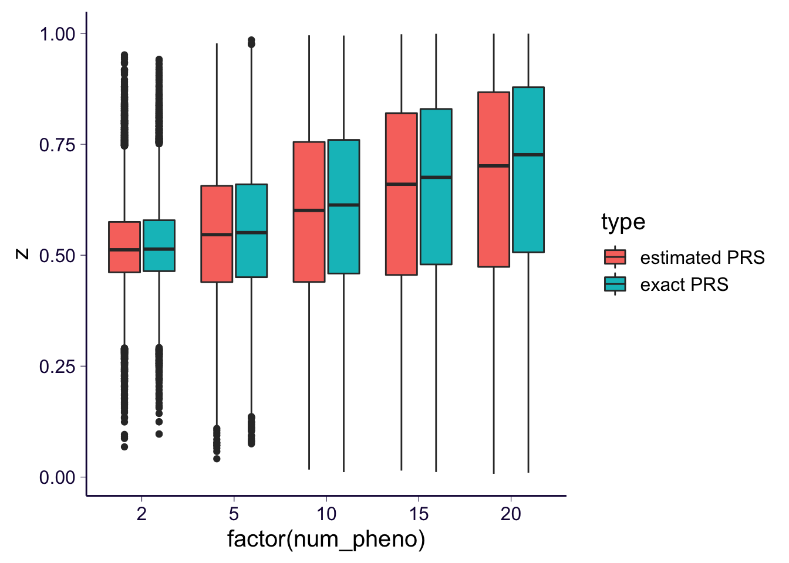

\[ \newcommand{\E}{\text{E}} \]
library(ggplot2)
library(dplyr)
theme_set(theme_bw(base_size=15))
set.seed(2020)
# load some gists
source('https://gist.githubusercontent.com/liangyy/4a5d201ac2f8b31aab77b29d5a9f2cc2/raw/e84668de1861785eb8c4e3f57bfe0e493c540c81/fast_gwas.R')
source('https://gist.githubusercontent.com/liangyy/43912b3ecab5d10c89f9d4b2669871c9/raw/3ca651cfa53ffccb8422f432561138a46e93710f/my_ggplot_theme.R')Haplotype: For an individual, we have their haplotype information denoted as \(H^1\) and \(H^2\). The haplotype information is obtained throught phasing which requires a external reference (haplotype) panel.
Phenotypes of parents: Besides, we have the phenotypes of their parents. Considering \(P\) phenotypes, we have \(y_{i, p}^f, y_{i, p}^m\).
The goal is to impute the origin of parent for each of the two haplotypes. We denote the origin as \(Z_i\) which represents if \(H_i^1\) comes from father.
We consider a simple model as follow.
\[\begin{aligned} y_{i, p}^f &= (H_i^{f,1} + H_i^{f,2}) \beta_p + \epsilon_{i, p}^f \\ y_{i, p}^m &= (H_i^{m,1} + H_i^{m,2}) \beta_p + \epsilon_{i, p}^m \end{aligned}\]
And we know that one of \(H_i^1\) and \(H_i^2\) comes from father and the other comes from mother. Suppose \(H_i^1\) comes from father and \(H_i^2\) comes from mother, then we can write the haplotype version of the above expressions as follow.
\[\begin{aligned} y_{i, p}^f &= H_i^1 \beta_p + \epsilon_{i, p}^{f,\star} \\ y_{i, p}^m &= H_i^2 \beta_p + \epsilon_{i, p}^{m,\star} \end{aligned}\] where \(\epsilon_{i, p}^{\star}\) contains two parts: 1) environmental noise; and 2) the genetic component of one haplotype. And let \(\epsilon_{i, p}^{\star} \sim N(0, \sigma^2)\).
Essentially, we observe \(H_i^1, H_i^2\) and \(y_{i, p}^f, y_{i, p}^m\) and we’d like to infer \(Z_i\). If we know \(\beta_p\), we can let \(g_{i, p}^k = H_i^k \beta_p\) and we can infer \(Z_i\) by comparing how similar is \((y_{i, 1}^k, \cdots, y_{i, P}^k)\) to \((y_{i, p}^f, \cdots, y_{i, P}^f)\). The uncertainty in estimating \(Z_i\) is accounted for in estimating \(\Pr(Z_i = 1 | \text{data})\). To obtain this quantity, we need to estimate \(\sigma^2\).
However, in practice, we do not observe \(\beta_p\). Instead, we use \(\hat\beta_p\) estimated from GWAS, or more generally, we replace \(g_{i, p}^k\) (the genetic component captured by a haplotype) with any other proxy to it, polygenic risk score.
Here we try a minimal simulation scheme. It contains the following steps:
Some parameter settings:
sample_size = 10000
sample_size_extra = 20000
n_pheno = 30
prior_causal = 0.1
causal_sigma = 1
n_snp = 1000
heritabiltiy = 0.05
maf_low = 0.05
maf_high = 0.45Simulation.
get_maf = function(p, maf_low, maf_high) {
return(runif(p, min = maf_low, max = maf_high))
}
sim_hap = function(n, p, maf) {
hlist = list()
for(i in 1:2) {
hlist[[i]] = matrix(rbinom(p * n, 1, rep(maf, n)), byrow = TRUE, nrow = n, ncol = p)
}
return(hlist)
}
transmit_haplo = function(father, mother) {
out = list(
matrix(NA, nrow = nrow(father[[1]]), ncol = ncol(father[[1]])),
matrix(NA, nrow = nrow(father[[2]]), ncol = ncol(father[[2]]))
)
for(i in 1 : nrow(out[[1]])) {
f_idx = sample(1:2, 1)
m_idx = sample(1:2, 1)
out[[1]][i, ] = father[[f_idx]][i, ]
out[[2]][i, ] = mother[[m_idx]][i, ]
}
return(out)
}
spike_and_slab = function(n, pi_, sigma2) {
b = rnorm(n, sd = sqrt(sigma2))
b[runif(n) <= pi_] = 0
return(b)
}
simulate_pheno = function(h, beta, h2, maf) {
n = nrow(h[[1]])
p = ncol(h[[1]])
k = ncol(beta)
var_snp = 2 * maf * (1 - maf) # n x 1
var_genetics = t(beta ^ 2) %*% var_snp # k x 1
var_e = (1 - h2) * var_genetics / h2 # k x 1
env_noise = matrix(rnorm(n * k, sd = sqrt(rep(var_e, n))), byrow = TRUE, ncol = k, nrow = n) # n x k
pheno = h[[1]] %*% beta + h[[2]] %*% beta + env_noise
pheno
}X = h_gwas[[1]] + h_gwas[[2]]
y = y_gwas[, 1]
o = run_gwas(X, y)maf = get_maf(n_snp, maf_low, maf_high)
h_father = sim_hap(sample_size, n_snp, maf)
h_mother = sim_hap(sample_size, n_snp, maf)
h_gwas = sim_hap(sample_size_extra, n_snp, maf)
h_child = transmit_haplo(h_father, h_mother)
effect_size = matrix(spike_and_slab(n_snp * n_pheno, 1 - prior_causal, causal_sigma), nrow = n_snp, ncol = n_pheno)
y_father = simulate_pheno(h_father, effect_size, heritabiltiy, maf)
y_mother = simulate_pheno(h_mother, effect_size, heritabiltiy, maf)
y_gwas = simulate_pheno(h_gwas, effect_size, heritabiltiy, maf)Input:
Output:
Scketch the algorithm.
\[\begin{aligned} Q(\theta | \theta^{(t)}) &= \E_{Z | y, g, \sigma^2}[ \log \Pr(y, g, Z; \sigma^2)] \\ &= \sum_i \E_{Z_i | y_i, g_i, \sigma^2}[\log \Pr(y_i, g_i, Z_i; \sigma^2)] \\ &= \sum_i \E_{Z_i | y_i, g_i, \sigma^2}[\log \Pr(Z_i) + \sum_p \log \Pr(y_{i, p}, g_{i, p}, | Z_i ; \sigma^2)]~\text{, assume iid phenotypes} \\ &= const. + \sum_i \E_{Z_i | y_i, g_i, \sigma^2}[\sum_p \log \Pr(y_{i, p}, g_{i, p}, | Z_i ; \sigma^2)] \end{aligned}\]
And \[\begin{aligned} \log \Pr(y_{i, p}, g_{i, p}, | Z_i ; \sigma^2) &= Z_i F_1(y_{i, p}, g_{i, p}) + (1 - Z_i) F_2(y_{i, p}, g_{i, p}) \\ F_1(y, g) &= l(y^f, g^1) + l(y^m, g^2) \\ F_2(y, g) &= l(y^f, g^2) + l(y^m, g^1) \end{aligned}\]
So, we have \[\begin{aligned} Q(\theta|\theta^{(t)}) &= const. + \sum_i \E_{Z_i | y_i, g_i, \sigma^2}[\sum_p (Z_i F_1(y_{i, p}, g_{i, p}) + (1 - Z_i) F_2(y_{i, p}, g_{i, p}))] \end{aligned}\]
Let \(\E_{Z_i | y_i, g_i, \sigma^2} [Z_i] = w_i\), we have the simplified version. \[\begin{aligned} Q(\theta|\theta^{(t)}) &= const. + \sum_i \sum_p (w_i F_1(y_{i, p}, g_{i, p}) + (1 - w_i) F_2(y_{i, p}, g_{i, p})) \\ &= const. + \sum_i w_i \sum_p F_1(y_{i, p}, g_{i, p}) + \sum_i (1 - w_i) \sum_p F_2(y_{i, p}, g_{i, p}) \end{aligned}\]
To obtain \(w_i\), Bayes rule is applied. \[\begin{aligned} \Pr(Z_i = k | y_i, g_i) &= \frac{\Pr(y_i, g_i | Z_i = k) \Pr(Z_i = k)}{\sum_{k' = 0, 1} \Pr(y_i, g_i | Z_i = k') \Pr(Z_i = k')} \\ \Pr(Z_i = k) ~&~ \text{is based on prior} \\ \log \Pr(y_i, g_i | Z_i) &= \begin{cases} \sum_p F_1(y_{i, p}, g_{i, p}), ~ Z_i = 1 \\ \sum_p F_2(y_{i, p}, g_{i, p}), ~ Z_i = 0 \end{cases} \end{aligned}\]
So the calculation about \(w_i\) concludes the E step. The M step is to update \(\sigma^2\).
\[\begin{aligned} \arg\max_{\sigma^2} Q(\theta | \theta^{(t)}) &= \arg\max_{\sigma} \sum_i w_i \sum_p F_1(y_{i, p}, g_{i, p}) + \sum_i (1 - w_i) \sum_p F_2(y_{i, p}, g_{i, p}) \end{aligned}\]
Here we consider the simplest case in which phenotypes are independent but each phenotype has its own \(\sigma^2\). Essentially, for each phenotype and each individual, we have \[\begin{aligned} l(y, g) &= -\frac{1}{2} \log \sigma^2 - \frac{(y - g)^2}{2 \sigma^2} \end{aligned}\] The optimization stated above is simply a weighted version of sample variance. \[\begin{aligned} \sigma_p^2 \leftarrow \frac{1}{2N}\sum_i w_i [(y_{i, p}^f - y_i^1)^2 + y_{i, p}^m - y_i^2)^2] + (1 - w_i) [(y_{i, p}^m - y_i^1)^2 + (y_{i, p}^f - y_i^2)^2] \end{aligned}\]
log_prob_y_g_given_z = function(yf, ym, g1, g2, sigma2_p, z) {
# message('dim = ', dim(diff_y_g(yf, ym, g1, g2, z)))
o = - sweep(diff_y_g(yf, ym, g1, g2, z), 2, FUN = '/', 2 * sigma2_p)
# message('length = ', length(sigma2_p))
return(rowSums(o))
}
diff_y_g = function(yf, ym, g1, g2, z) {
if(z == 1) {
o = (yf - g1) ^ 2 + (ym - g2) ^ 2
} else if(z == 0) {
o = (ym - g1) ^ 2 + (yf - g2) ^ 2
}
return(o)
}
em_algorithm = function(y_father, y_mother, g_1, g_2, maxiter = 15, prior_z = 0.5) {
n = nrow(y_father) # sample size
p = ncol(y_father) # number of phenotypes
# z_prob_n = rep(0.5, n)
sigma2_p = rep(1, p)
lld = c()
niter = 0
while(niter < maxiter) {
# E step
## to handle potential over/underflow
lp1 = log_prob_y_g_given_z(y_father, y_mother, g_1, g_2, sigma2_p, 1)
lp0 = log_prob_y_g_given_z(y_father, y_mother, g_1, g_2, sigma2_p, 0)
# message('lp1 = ', lp1[2], '; lp0 = ', lp0[2])
lp_max = pmax(lp1, lp0)
lp1 = lp1 - lp_max
lp0 = lp0 - lp_max
p1 = exp(lp1) * prior_z
p0 = exp(lp0) * (1 - prior_z)
##
w = p1 / (p1 + p0)
lld = c(lld, sum(log((p1 + p0)) + lp_max))
# message(p1[1], ';', p0[1], ' ;', w[1])
# M step
sigma2_p = 1 / 2 / n * colSums(sweep(diff_y_g(y_father, y_mother, g_1, g_2, 1), 1, FUN = '*', w) + sweep(diff_y_g(y_father, y_mother, g_1, g_2, 0), 1, FUN = '*', 1 - w))
# message('sigma2 = ', paste(sigma2_p, collapse = '; '))
# some others
niter = niter + 1
}
return(list(z_prob_n = w, sigma2_p = sigma2_p, lld = lld))
}Here we consider two settings:
We consider how the number of phenotypes could affect the result.
g1 = h_child[[1]] %*% effect_size
g2 = h_child[[2]] %*% effect_size
collector = list()
for(p in c(2, 5, 10, 15, 20)) {
o = em_algorithm(y_father[, 1:p], y_mother[, 1:p], g1[, 1:p], g2[, 1:p])
collector[[length(collector) + 1]] = data.frame(z = o$z_prob_n, num_pheno = p, idx = 1 : length(o$z_prob_n))
}
df_perfect = do.call(rbind, collector)# build PRS
build_prs = function(geno, pheno, prs_p_cutoff = 0.01) {
n_snp = ncol(geno)
n_pheno = ncol(pheno)
effect_size_prs = matrix(0, nrow = n_snp, ncol = n_pheno)
prs_p_cutoff = 0.01
prs_z_cutoff = abs(qnorm(prs_p_cutoff / 2))
for(pp in 1 : n_pheno) {
message('Building phenotype ', pp)
gwas = run_gwas(geno, pheno[, pp])
pass_ind = abs(gwas$bhat / gwas$bhat_se) > prs_z_cutoff
effect_size_prs[, pp][pass_ind] = gwas$bhat[pass_ind]
}
return(effect_size_prs)
}
Xgwas = h_gwas[[1]] + h_gwas[[2]]
effect_size_prs = build_prs(Xgwas, y_gwas)## Building phenotype 1## Building phenotype 2## Building phenotype 3## Building phenotype 4## Building phenotype 5## Building phenotype 6## Building phenotype 7## Building phenotype 8## Building phenotype 9## Building phenotype 10## Building phenotype 11## Building phenotype 12## Building phenotype 13## Building phenotype 14## Building phenotype 15## Building phenotype 16## Building phenotype 17## Building phenotype 18## Building phenotype 19## Building phenotype 20## Building phenotype 21## Building phenotype 22## Building phenotype 23## Building phenotype 24## Building phenotype 25## Building phenotype 26## Building phenotype 27## Building phenotype 28## Building phenotype 29## Building phenotype 30g1 = h_child[[1]] %*% effect_size_prs
g2 = h_child[[2]] %*% effect_size_prs
collector = list()
for(p in c(2, 5, 10, 15, 20)) {
o = em_algorithm(y_father[, 1:p], y_mother[, 1:p], g1[, 1:p], g2[, 1:p])
collector[[length(collector) + 1]] = data.frame(z = o$z_prob_n, num_pheno = p, idx = 1 : length(o$z_prob_n))
}
df_estimated = do.call(rbind, collector)tempo = rbind(
df_perfect %>% mutate(type = 'exact PRS'),
df_estimated %>% mutate(type = 'estimated PRS')
)
tempo %>%
ggplot() + geom_boxplot(aes(x = factor(num_pheno), y = z, fill = type)) + th
tempo %>% ggplot() + geom_jitter(aes(x = num_pheno, y = z), width = 1, height = 0, alpha = 0.01) + facet_wrap(~type, nrow = 1) + th2